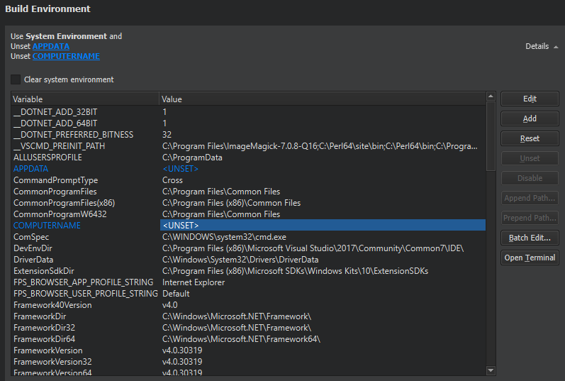

Specifying Environment Settings
You can specify the environment you want to use for building a project in the Build Environment section of the Build Settings.
By default, the environment in which Qt Creator was started is used and modified to include the Qt version. Depending on the selected Qt version, Qt Creator automatically sets the necessary environment variables. You can edit existing environment variables or add, reset and unset new variables based on your project requirements.
To globally change the system environment from the one in which Qt Creator is started, select Tools > Options > Environment > System, and then select Change in the Environment field.
In addition, you can specify custom environment variables in the Project Settings > Environment settings. They are added to all build environments. The final build environment is specified separately for each kit. The project-specific environment settings enable you to amend the build environment for all kits that you use to build the project simultaneously, rather than having to edit it separately for each kit.

The changes are stored in the local project specific CMakeLists.txt.user or .pro.user file, depending on the build system you use. Therefore, they are not suitable for sharing between developers or development PCs. To share settings, incorporate them into the build system. For example, if you use CMake, make the changes in the CMakeLists.txt file, and if you use qmake, make the changes in the .pro file.
Batch Editing
To modify environment variable values for build or run environments, select Batch Edit in the Build Environment or Environment pane and enter environment variables in the Edit Environment dialog.
To remove a variable value from the environment, enter the variable name. For example, TEST sets the value of the TEST variable empty when building or running the project.
To add a variable value to the environment, enter the variable name and value, separated by the equals sign. For example, the following line prepends the /opt/bin folder to the existing PATH:
- On Windows:
PATH=C:\opt\bin;${PATH} - On Linux:
PATH=/opt/bin:${PATH}
To add or remove several variables, place them on separate lines. The order is important. If you remove a value on a line, you cannot refer to it on the following lines. However, you can remove a value after you have referred to it on an earlier line.
To temporarily disable a variable, add a hash character (#) to the beginning of the line.
Clearing the System Environment
To build with a clean system environment, select the Clear system environment check box. Qt Creator discards the current environment, and populates a clean system environment with the environment variables that the compilers and tools need. Therefore, the environment is never totally empty, even after you clear it.
Using Environment Variables
You can use any environment variables in build, deploy, and run configurations. For a list of variable names, select Build Settings > Build Environment > Details. Environment variables are referenced using the native syntax: $VARNAME or ${VARNAME} on Unix and %VARNAME% on Windows.